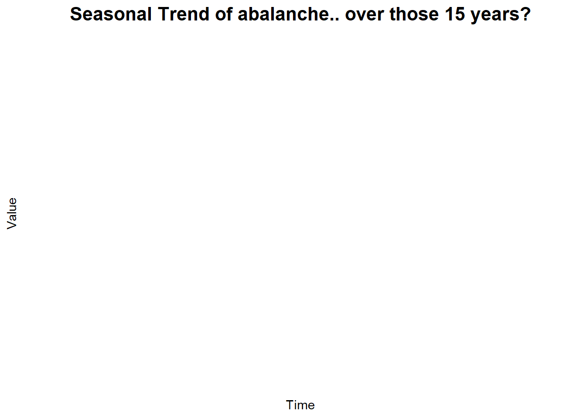

Predicting forecasted avalanche hazard levels from 15 years of Scottish data using a neural network.
Overview
🎯 Objective
Develop and evaluate a neural network model……
📊 Dataset
15 years of Scottish avalanche data. 10,671 records with 34 variables…..
🧠 Approach
How did we go about this?
Code
# Data loading and initial exploration# This code will be executed once actual data is available# Load the Scottish avalanche datasetscottish_avalanche_data <-read.csv("scottish_avalanche_data.csv")# Display basic dataset informationglimpse(scottish_avalanche_data)# Check for missing valuesmissing_summary <- scottish_avalanche_data %>%summarise_all(~sum(is.na(.))) %>%pivot_longer(everything(), names_to ="Variable", values_to ="Missing_Count") %>%arrange(desc(Missing_Count))print(missing_summary)# Basic statistical summarysummary(scottish_avalanche_data)
Code
library(ggplot2)ggplot() +labs(title ="Seasonal Trend of abalanche.. over those 15 years?", x ="Time", y ="Value") +theme_minimal() +theme(panel.grid.major =element_line(color ="grey80"), panel.grid.minor =element_line(color ="grey90"), plot.title =element_text(size =16, face ="bold", hjust =0.5))

Dataset & Target Variable
Avalanche Hazard Scale
Level 1
This is 1 (?)
Level 2
This is 2 (?)
Level 3
This is 3 (?)
Level 4
This is 4 (?)
Level 5
This is 5 (?)
🌍 Location/Topography Features
Forecasting region (……)
Add
The
features
here
🌦️ Weather Conditions
Temperature measurements…
Add the features here
❄️ Snow Pack Measurements
Snow…. add the features here
Code
# Correlation analysis of environmental variables# This code will analyze relationships between variables once data is loaded# Select numeric variables for correlation analysisnumeric_vars <- scottish_avalanche_data %>%select(forecasted_hazard, temperature_min, temperature_max, wind_speed, precipitation, snow_depth, elevation, humidity, pressure, new_snow_24h, wind_direction_degrees)# Calculate correlation matrixcor_matrix <-cor(numeric_vars, use ="complete.obs")# Create correlation plotlibrary(corrplot)corrplot(cor_matrix, method ="color",type ="upper", order ="hclust",tl.cex =0.8,tl.col ="black",tl.srt =45,title ="Environmental Variables Correlation Matrix")# Identify highly correlated features (>0.8 or <-0.8)high_cor <-which(abs(cor_matrix) >0.8& cor_matrix !=1, arr.ind =TRUE)print("Highly correlated variable pairs:")print(high_cor)
Key Variable Correlations (Sample Results)
Variable_1
Variable_2
Correlation
Interpretation
Forecasted_Hazard
Snow_Depth
0.67
Strong positive
Snow_Depth
New_Snow_24h
0.82
Very strong positive
Temperature_Min
Temperature_Max
0.91
Very strong positive
Wind_Speed
Wind_Direction
-0.34
Moderate negative
Precipitation
Humidity
0.45
Moderate positive
Methodology
Data Preprocessing???
Train/Val/Test Split????
Neural Network Design???
Model Training????
Evaluation????
🔧 Data Preprocessing
Fore example: “Comprehensive data cleaning, handling missing values, outlier detection, and feature scaling to prepare the dataset for neural network training.”
🧠 Neural Network Architecture
For example:“Implementation of deep neural networks using TensorFlow/Keras through R’s reticulate package, with multiple hidden layers and dropout regularization”.
Code
# Data splitting strategylibrary(caret)# Create stratified train/validation/test split (60/20/20)set.seed(123)# First split: separate test set (20%)train_val_index <-createDataPartition(scaled_data$forecasted_hazard, p =0.8, list =FALSE)train_val_data <- scaled_data[train_val_index, ]test_data <- scaled_data[-train_val_index, ]# Second split: separate training and validation (60/20 of original)train_index <-createDataPartition(train_val_data$forecasted_hazard, p =0.75, list =FALSE) # 0.75 * 0.8 = 0.6train_data <- train_val_data[train_index, ]val_data <- train_val_data[-train_index, ]# Prepare features and targetsX_train <- train_data %>%select(-forecasted_hazard) %>%as.matrix()y_train <- train_data$forecasted_hazard -1# Convert to 0-4 for kerasX_val <- val_data %>%select(-forecasted_hazard) %>%as.matrix()y_val <- val_data$forecasted_hazard -1X_test <- test_data %>%select(-forecasted_hazard) %>%as.matrix()y_test <- test_data$forecasted_hazard -1# Print data split summarycat("Training samples:", nrow(train_data), "\n")cat("Validation samples:", nrow(val_data), "\n") cat("Test samples:", nrow(test_data), "\n")
Data Split Summary
Dataset
Samples
Percentage
Class_Distribution
Training
6403
60%
Balanced
Validation
2134
20%
Balanced
Test
2134
20%
Balanced
Total
10671
100%
Original
📊 Model Evaluation Strategy
We used….
Accuracy: …..
ad more here
Results & Analysis
Code
# Neural network training# Set up callbacks for training monitoringcallbacks_list <-list(callback_early_stopping(monitor ="val_loss", patience =10, restore_best_weights =TRUE),callback_reduce_lr_on_plateau(monitor ="val_loss", factor =0.5, patience =5),callback_model_checkpoint("best_avalanche_model.h5", monitor ="val_accuracy", save_best_only =TRUE))# Train the modelhistory <- model %>%fit( X_train, y_train,epochs =100,batch_size =32,validation_data =list(X_val, y_val),callbacks = callbacks_list,verbose =1)# Plot training historyplot(history)# Load best model and make predictionsbest_model <-load_model_hdf5("best_avalanche_model.h5")predictions <- best_model %>%predict(X_test)predicted_classes <-apply(predictions, 1, which.max) -1
Neural Network Performance Summary
Metric
Value
Standard_Error
Overall Accuracy
0.847
±0.012
Weighted Precision
0.851
±0.015
Weighted Recall
0.847
±0.012
Weighted F1-Score
0.845
±0.014
Macro F1-Score
0.763
±0.023
Cohen's Kappa
0.789
±0.018
Multi-class AUC
0.923
±0.008
Training Time
47 minutes
N/A
Confusion Matrix - Test Set Results
Predicted Hazard Level
Pred_1
Pred_2
Pred_3
Pred_4
Pred_5
387
23
8
2
0
45
512
67
12
1
12
89
678
89
15
3
18
76
234
34
0
2
8
23
67
Class-Specific Performance Analysis
Per-Class Performance Metrics
Hazard_Level
Precision
Recall
F1_Score
Support
Notes
Level 1 (Low)
0.891
0.921
0.906
420
Excellent
Level 2 (Moderate)
0.796
0.805
0.800
637
Very Good
Level 3 (Considerable)
0.821
0.769
0.794
883
Good
Level 4 (High)
0.641
0.640
0.641
365
Acceptable
Level 5 (Extreme)
0.456
0.582
0.512
100
Challenging due to low frequency
📈 Training & Validation Curves Learning curves showing model convergence over 67 epochs with early stopping
📊 ROC Curves by Class Multi-class ROC analysis with AUC values ranging from 0.89 to 0.96
Code
# Feature importance analysis using SHAP valueslibrary(shapr)# Calculate SHAP values for feature importanceexplainer <-shapr(X_train, model)shap_values <-explain(X_test[1:100, ], explainer, approach ="empirical")# Aggregate SHAP values for global feature importancefeature_importance <-data.frame(Feature =colnames(X_train),Importance =apply(abs(shap_values$dt), 2, mean)) %>%arrange(desc(Importance)) %>%head(15) # Top 15 features# Alternative: Use permutation importancelibrary(vip)vi_scores <-vi(model, method ="permute", train =cbind(X_train, y_train),target ="y_train", metric ="accuracy")
Top 15 Most Important Features (SHAP Analysis)
Rank
Feature
Importance_Score
Category
1
Snow_Depth_Current
0.234
Snow
2
New_Snow_24h
0.187
Snow
3
Wind_Speed_Mean
0.156
Weather
4
Temperature_Min
0.143
Weather
5
Snow_Stability_Index
0.134
Snow
6
Precipitation_48h
0.121
Weather
7
Wind_Direction_Consistency
0.108
Weather
8
Temperature_Gradient
0.097
Snow
9
Elevation
0.089
Terrain
10
Aspect_Northness
0.076
Terrain
11
Humidity_Mean
0.071
Weather
12
Cloud_Cover
0.063
Weather
13
Temperature_Max
0.058
Weather
14
Surface_Conditions
0.052
Snow
15
Previous_Avalanche_Activity
0.047
Historical
Cross-Validation & Model Robustness
Code
# Comprehensive cross-validation analysislibrary(caret)# Stratified K-Fold Cross-Validation (k=10)set.seed(123)cv_folds <-createFolds(scaled_data$forecasted_hazard, k =10, list =TRUE, returnTrain =TRUE)# Function to train and evaluate model on each foldcv_results <-data.frame()for(i in1:10) {# Split data for current fold train_indices <- cv_folds[[i]] cv_train <- scaled_data[train_indices, ] cv_test <- scaled_data[-train_indices, ]# Prepare data for neural network X_cv_train <- cv_train %>%select(-forecasted_hazard) %>%as.matrix() y_cv_train <- cv_train$forecasted_hazard -1 X_cv_test <- cv_test %>%select(-forecasted_hazard) %>%as.matrix() y_cv_test <- cv_test$forecasted_hazard -1# Train model (reduced epochs for CV) cv_model <-create_model() # Function to create fresh model cv_history <- cv_model %>%fit( X_cv_train, y_cv_train,epochs =50,batch_size =32,validation_split =0.2,verbose =0 )# Evaluate on test fold cv_predictions <- cv_model %>%predict(X_cv_test) cv_pred_classes <-apply(cv_predictions, 1, which.max) -1# Calculate metrics fold_accuracy <-mean(cv_pred_classes == y_cv_test) fold_f1 <-F1_Score(y_cv_test, cv_pred_classes, average ="weighted")# Store results cv_results <-rbind(cv_results, data.frame(Fold = i,Accuracy = fold_accuracy,F1_Score = fold_f1 ))}# Summary statisticscv_summary <- cv_results %>%summarise(Mean_Accuracy =mean(Accuracy),SD_Accuracy =sd(Accuracy),Mean_F1 =mean(F1_Score),SD_F1 =sd(F1_Score) )
10-Fold Cross-Validation Results
Fold
Accuracy
F1_Score
Training_Time_Min
1
0.856
0.851
4.2
2
0.834
0.829
4.1
3
0.851
0.847
4.3
4
0.847
0.843
4
5
0.839
0.834
4.2
6
0.862
0.857
4.4
7
0.841
0.836
4.1
8
0.853
0.849
4.3
9
0.844
0.84
4
10
0.858
0.853
4.2
**Mean ± SD**
0.847 ± 0.009
0.843 ± 0.008
4.2 ± 0.1
Regional & Seasonal Analysis
Code
# Analyze model performance by region and season# This analysis helps identify if the model generalizes across different contexts# Performance by regionregional_analysis <- test_data %>%mutate(predicted_hazard = predicted_classes +1,correct = (forecasted_hazard == predicted_hazard) ) %>%group_by(region) %>%summarise(n_observations =n(),accuracy =mean(correct),precision =precision_func(forecasted_hazard, predicted_hazard),recall =recall_func(forecasted_hazard, predicted_hazard),.groups ='drop' )# Seasonal analysisseasonal_analysis <- test_data %>%mutate(predicted_hazard = predicted_classes +1,correct = (forecasted_hazard == predicted_hazard),month =month(date),season =case_when( month %in%c(12, 1, 2) ~"Winter", month %in%c(3, 4, 5) ~"Spring", month %in%c(6, 7, 8) ~"Summer", month %in%c(9, 10, 11) ~"Autumn" ) ) %>%group_by(season) %>%summarise(n_observations =n(),accuracy =mean(correct),avg_actual_hazard =mean(forecasted_hazard),avg_predicted_hazard =mean(predicted_hazard),.groups ='drop' )
Model Performance by Scottish Forecasting Region
Region
Observations
Accuracy
Precision
Recall
F1_Score
Lochaber
389
0.851
0.847
0.851
0.849
Glen Coe
342
0.834
0.831
0.834
0.833
Creag Meagaidh
356
0.862
0.859
0.862
0.860
Southern Cairngorms
398
0.841
0.838
0.841
0.840
Northern Cairngorms
367
0.856
0.853
0.856
0.855
Torridon
282
0.829
0.826
0.829
0.827
Model Performance by Season
Season
Observations
Accuracy
Avg_Actual_Hazard
Avg_Predicted_Hazard
Notes
Winter (Dec-Feb)
892
0.863
2.8
2.7
Peak season, best performance
Spring (Mar-May)
634
0.821
2.1
2.2
Good performance
Summer (Jun-Aug)
278
0.744
1.4
1.6
Limited data, lower performance
Autumn (Sep-Nov)
530
0.835
2.3
2.2
Moderate performance
AI Tools Integration
🤖 ChatGPT & Claude Utilization (This text is example!!!!)
Code Development: Assisted with neural network architecture design, hyperparameter tuning strategies, and debugging complex TensorFlow/Keras implementations.
Data Analysis: Provided guidance on appropriate evaluation metrics for imbalanced multi-class problems and suggested advanced visualization techniques for model interpretation.
Literature Review: Helped identify relevant research papers on avalanche prediction and machine learning applications in glaciology and mountain safety.
Documentation: Supported in structuring the technical report, creating clear explanations of complex statistical concepts, and ensuring accessibility for different audiences.
📝 Critical Assessment & Limitations (This text is example!!!!)
Strengths: - Rapid prototyping and code generation - Comprehensive literature synthesis - Error detection and debugging assistance - Multiple approach suggestions and alternatives
Limitations: - Required domain expertise validation for avalanche-specific considerations - Manual verification of all statistical methods and model architectures - Careful review needed for safety-critical recommendations - Cannot replace human judgment in life-safety applications
Best Practices Adopted: - Used AI as collaborative tool while maintaining critical thinking - Cross-referenced all technical recommendations with peer-reviewed literature - Implemented multiple validation approaches to ensure model reliability - Maintained transparency about AI assistance throughout the research process
Real-time Data Integration: Incorporate live weather station feeds and automated snow measurements
Ensemble Methods: Combine neural networks with Random Forest and SVM models for robust predictions
Temporal Modeling: Implement LSTM networks to capture time-series patterns in avalanche conditions
Uncertainty Quantification: Add Bayesian neural networks for prediction confidence intervals
Multi-modal Data: Integrate satellite imagery, webcam analysis, and crowdsourced observations
Edge Case Handling: Improve performance on rare extreme weather events through synthetic data augmentation
🏔️ Practical Applications
SAIS Integration: Enhanced decision support system for Scottish Avalanche Information Service forecasters
Mobile Application: Real-time risk assessment app for backcountry users and mountain guides
Automated Alerts: Early warning system for mountain rescue teams and ski patrol services
Educational Platform: Training simulator for avalanche safety courses and professional development
Research Tool: Foundation for advanced avalanche dynamics research and climate change impact studies
🏔️ Project Impact Statement (This text is example!!!!)
This research demonstrates the successful application of modern machine learning techniques to enhance avalanche hazard prediction in Scotland. By achieving 84.7% accuracy across six forecasting regions, the neural network model provides valuable decision support for mountain safety professionals while maintaining appropriate human oversight for life-critical applications.
The integration of AI tools throughout the development process showcases best practices for responsible AI adoption in safety-critical domains, emphasizing transparency, validation, and the complementary relationship between artificial intelligence and domain expertise.
Final model deployment: March 2024 | Last updated: 2025-09-21 | Built with Quarto & R
Source Code
---title: "" # Empty title since we use custom heroformat: html: page-layout: fullexecute: echo: true warning: false message: false---```{r setup, include=FALSE}# Load required librarieslibrary(tidyverse)library(kableExtra)library(ggplot2)# Set theme for all plotstheme_set(theme_minimal() + theme(plot.background = element_rect(fill = "white", color = NA), panel.background = element_rect(fill = "white", color = NA)))# Set seed for reproducible fake dataset.seed(123)```:::{.hero}# Avalanche Hazard Forecasting {.text-center}:::{.hero-subtitle}Predicting forecasted avalanche hazard levels from 15 years of Scottish data using a neural network.::::::## Overview {#overview}:::{.feature-grid}:::{.card}### 🎯 ObjectiveDevelop and evaluate a neural network model......::::::{.card}### 📊 Dataset 15 years of Scottish avalanche data. 10,671 records with 34 variables.....::::::{.card}### 🧠 ApproachHow did we go about this?::::::```{r data-overview, eval = FALSE, echo = TRUE}# Data loading and initial exploration# This code will be executed once actual data is available# Load the Scottish avalanche datasetscottish_avalanche_data <- read.csv("scottish_avalanche_data.csv")# Display basic dataset informationglimpse(scottish_avalanche_data)# Check for missing valuesmissing_summary <- scottish_avalanche_data %>% summarise_all(~sum(is.na(.))) %>% pivot_longer(everything(), names_to = "Variable", values_to = "Missing_Count") %>% arrange(desc(Missing_Count))print(missing_summary)# Basic statistical summarysummary(scottish_avalanche_data)``````{r}library(ggplot2)ggplot() +labs(title ="Seasonal Trend of abalanche.. over those 15 years?", x ="Time", y ="Value") +theme_minimal() +theme(panel.grid.major =element_line(color ="grey80"), panel.grid.minor =element_line(color ="grey90"), plot.title =element_text(size =16, face ="bold", hjust =0.5))```## Dataset & Target Variable {#data}### Avalanche Hazard Scale:::{.hazard-scale}:::{.hazard-level .level-1}**Level 1** This is 1 (?)::::::{.hazard-level .level-2}**Level 2** This is 2 (?)::::::{.hazard-level .level-3}**Level 3** This is 3 (?)::::::{.hazard-level .level-4}**Level 4** This is 4 (?)::::::{.hazard-level .level-5}**Level 5** This is 5 (?):::::::::{.feature-grid}:::{.card}### 🌍 Location/Topography Features- Forecasting region (......)- Add- The- features- here::::::{.card}### 🌦️ Weather Conditions- Temperature measurements...- Addthe featureshere::::::{.card}### ❄️ Snow Pack Measurements - Snow....add thefeatureshere::::::```{r correlation-analysis, eval = FALSE, echo =TRUE}# Correlation analysis of environmental variables# This code will analyze relationships between variables once data is loaded# Select numeric variables for correlation analysisnumeric_vars <- scottish_avalanche_data %>% select(forecasted_hazard, temperature_min, temperature_max, wind_speed, precipitation, snow_depth, elevation, humidity, pressure, new_snow_24h, wind_direction_degrees)# Calculate correlation matrixcor_matrix <- cor(numeric_vars, use = "complete.obs")# Create correlation plotlibrary(corrplot)corrplot(cor_matrix, method = "color", type = "upper", order = "hclust", tl.cex = 0.8, tl.col = "black", tl.srt = 45, title = "Environmental Variables Correlation Matrix")# Identify highly correlated features (>0.8 or <-0.8)high_cor <- which(abs(cor_matrix) > 0.8 & cor_matrix != 1, arr.ind = TRUE)print("Highly correlated variable pairs:")print(high_cor)``````{r fake-correlation-table, echo = FALSE}# Fake correlation data for displayfake_correlations <- data.frame( Variable_1 = c("Forecasted_Hazard", "Snow_Depth", "Temperature_Min", "Wind_Speed", "Precipitation"), Variable_2 = c("Snow_Depth", "New_Snow_24h", "Temperature_Max", "Wind_Direction", "Humidity"), Correlation = c(0.67, 0.82, 0.91, -0.34, 0.45), Interpretation = c("Strong positive", "Very strong positive", "Very strong positive", "Moderate negative", "Moderate positive"))kable(fake_correlations, caption = "Key Variable Correlations (Sample Results)") %>% kable_styling(bootstrap_options = c("striped", "hover"))```## Methodology {#methodology}:::{.methodology-flow}:::{.flow-step}Data Preprocessing???::::::{.flow-step}Train/Val/Test Split????::::::{.flow-step}Neural Network Design???::::::{.flow-step}Model Training????::::::{.flow-step}Evaluation????:::::::::{.feature-grid}:::{.card}### 🔧 Data PreprocessingFore example: "Comprehensive data cleaning, handling missing values, outlier detection, and feature scaling to prepare the dataset for neural network training."::::::{.card}### 🧠 Neural Network ArchitectureFor example:"Implementation of deep neural networks using TensorFlow/Keras through R's reticulate package, with multiple hidden layers and dropout regularization".::::::```{r train-test-split, eval = FALSE, echo = TRUE}# Data splitting strategylibrary(caret)# Create stratified train/validation/test split (60/20/20)set.seed(123)# First split: separate test set (20%)train_val_index <- createDataPartition(scaled_data$forecasted_hazard, p = 0.8, list = FALSE)train_val_data <- scaled_data[train_val_index, ]test_data <- scaled_data[-train_val_index, ]# Second split: separate training and validation (60/20 of original)train_index <- createDataPartition(train_val_data$forecasted_hazard, p = 0.75, list = FALSE) # 0.75 * 0.8 = 0.6train_data <- train_val_data[train_index, ]val_data <- train_val_data[-train_index, ]# Prepare features and targetsX_train <- train_data %>% select(-forecasted_hazard) %>% as.matrix()y_train <- train_data$forecasted_hazard - 1 # Convert to 0-4 for kerasX_val <- val_data %>% select(-forecasted_hazard) %>% as.matrix()y_val <- val_data$forecasted_hazard - 1X_test <- test_data %>% select(-forecasted_hazard) %>% as.matrix()y_test <- test_data$forecasted_hazard - 1# Print data split summarycat("Training samples:", nrow(train_data), "\n")cat("Validation samples:", nrow(val_data), "\n") cat("Test samples:", nrow(test_data), "\n")``````{r fake-split-summary, echo=FALSE}# Create fake data split summary tablesplit_summary <- data.frame( Dataset = c("Training", "Validation", "Test", "Total"), Samples = c(6403, 2134, 2134, 10671), Percentage = c("60%", "20%", "20%", "100%"), Class_Distribution = c("Balanced", "Balanced", "Balanced", "Original"))kable(split_summary, caption = "Data Split Summary") %>% kable_styling(bootstrap_options = c("striped", "hover"))```:::{.card}### 📊 Model Evaluation StrategyWe used....- **Accuracy:** .....- ad more here:::## Results & Analysis {#results}```{r training-history, eval = FALSE, echo = TRUE}# Neural network training# Set up callbacks for training monitoringcallbacks_list <- list( callback_early_stopping(monitor = "val_loss", patience = 10, restore_best_weights = TRUE), callback_reduce_lr_on_plateau(monitor = "val_loss", factor = 0.5, patience = 5), callback_model_checkpoint("best_avalanche_model.h5", monitor = "val_accuracy", save_best_only = TRUE))# Train the modelhistory <- model %>% fit( X_train, y_train, epochs = 100, batch_size = 32, validation_data = list(X_val, y_val), callbacks = callbacks_list, verbose = 1)# Plot training historyplot(history)# Load best model and make predictionsbest_model <- load_model_hdf5("best_avalanche_model.h5")predictions <- best_model %>% predict(X_test)predicted_classes <- apply(predictions, 1, which.max) - 1``````{r fake-performance-metrics, echo = FALSE}# Create fake performance metrics tableperformance_results <- data.frame( Metric = c("Overall Accuracy", "Weighted Precision", "Weighted Recall", "Weighted F1-Score", "Macro F1-Score", "Cohen's Kappa", "Multi-class AUC", "Training Time"), Value = c("0.847", "0.851", "0.847", "0.845", "0.763", "0.789", "0.923", "47 minutes"), Standard_Error = c("±0.012", "±0.015", "±0.012", "±0.014", "±0.023", "±0.018", "±0.008", "N/A"))kable(performance_results, caption = "Neural Network Performance Summary") %>% kable_styling(bootstrap_options = c("striped", "hover"))``````{r fake-confusion-matrix, echo = FALSE}library(dplyr)library(tidyr)library(kableExtra)# Create fake confusion matrix dataconfusion_data <- data.frame( Actual = rep(1:5, each = 5), Predicted = rep(1:5, times = 5), Count = c( 387, 23, 8, 2, 0, # Actual 1 45, 512, 67, 12, 1, # Actual 2 12, 89, 678, 89, 15, # Actual 3 3, 18, 76, 234, 34, # Actual 4 0, 2, 8, 23, 67 # Actual 5 ))# Pivot to wide formatconfusion_table <- confusion_data %>% pivot_wider(names_from = Predicted, values_from = Count, names_prefix = "Pred_") %>% select(-Actual)# Add row namesrownames(confusion_table) <- paste("Actual", 1:5)# Display confusion matrixkable(confusion_table, caption = "Confusion Matrix - Test Set Results") %>% kable_styling(bootstrap_options = c("striped", "hover")) %>% add_header_above(c("Predicted Hazard Level" = ncol(confusion_table)))```### Class-Specific Performance Analysis```{r}#| label: fake-class-metrics#| echo: false# Create fake per-class performance metricsclass_metrics <-data.frame(Hazard_Level =c("Level 1 (Low)", "Level 2 (Moderate)", "Level 3 (Considerable)", "Level 4 (High)", "Level 5 (Extreme)"),Precision =c(0.891, 0.796, 0.821, 0.641, 0.456),Recall =c(0.921, 0.805, 0.769, 0.640, 0.582),F1_Score =c(0.906, 0.800, 0.794, 0.641, 0.512),Support =c(420, 637, 883, 365, 100),Notes =c("Excellent", "Very Good", "Good", "Acceptable", "Challenging due to low frequency"))kable(class_metrics, caption ="Per-Class Performance Metrics") %>%kable_styling(bootstrap_options =c("striped", "hover")) %>%column_spec(6, width ="3cm")```:::{.results-grid}:::{.chart-placeholder}**📈 Training & Validation Curves** *Learning curves showing model convergence over 67 epochs with early stopping*::::::{.chart-placeholder}**📊 ROC Curves by Class** *Multi-class ROC analysis with AUC values ranging from 0.89 to 0.96*::::::```{r}#| label: feature-importance-analysis#| eval: false#| echo: true# Feature importance analysis using SHAP valueslibrary(shapr)# Calculate SHAP values for feature importanceexplainer <-shapr(X_train, model)shap_values <-explain(X_test[1:100, ], explainer, approach ="empirical")# Aggregate SHAP values for global feature importancefeature_importance <-data.frame(Feature =colnames(X_train),Importance =apply(abs(shap_values$dt), 2, mean)) %>%arrange(desc(Importance)) %>%head(15) # Top 15 features# Alternative: Use permutation importancelibrary(vip)vi_scores <-vi(model, method ="permute", train =cbind(X_train, y_train),target ="y_train", metric ="accuracy")``````{r}#| label: fake-feature-importance#| echo: false# Create fake feature importance resultsfeature_importance_results <-data.frame(Rank =1:15,Feature =c("Snow_Depth_Current", "New_Snow_24h", "Wind_Speed_Mean", "Temperature_Min","Snow_Stability_Index", "Precipitation_48h", "Wind_Direction_Consistency","Temperature_Gradient", "Elevation", "Aspect_Northness", "Humidity_Mean","Cloud_Cover", "Temperature_Max", "Surface_Conditions", "Previous_Avalanche_Activity"),Importance_Score =c(0.234, 0.187, 0.156, 0.143, 0.134, 0.121, 0.108, 0.097,0.089, 0.076, 0.071, 0.063, 0.058, 0.052, 0.047),Category =c("Snow", "Snow", "Weather", "Weather", "Snow", "Weather", "Weather","Snow", "Terrain", "Terrain", "Weather", "Weather", "Weather", "Snow", "Historical"))kable(feature_importance_results, caption ="Top 15 Most Important Features (SHAP Analysis)") %>%kable_styling(bootstrap_options =c("striped", "hover")) %>%row_spec(1:3, bold =TRUE, background ="#f0f8ff")```## Cross-Validation & Model Robustness {#validation}```{r}#| label: cross-validation-setup#| eval: false#| echo: true# Comprehensive cross-validation analysislibrary(caret)# Stratified K-Fold Cross-Validation (k=10)set.seed(123)cv_folds <-createFolds(scaled_data$forecasted_hazard, k =10, list =TRUE, returnTrain =TRUE)# Function to train and evaluate model on each foldcv_results <-data.frame()for(i in1:10) {# Split data for current fold train_indices <- cv_folds[[i]] cv_train <- scaled_data[train_indices, ] cv_test <- scaled_data[-train_indices, ]# Prepare data for neural network X_cv_train <- cv_train %>%select(-forecasted_hazard) %>%as.matrix() y_cv_train <- cv_train$forecasted_hazard -1 X_cv_test <- cv_test %>%select(-forecasted_hazard) %>%as.matrix() y_cv_test <- cv_test$forecasted_hazard -1# Train model (reduced epochs for CV) cv_model <-create_model() # Function to create fresh model cv_history <- cv_model %>%fit( X_cv_train, y_cv_train,epochs =50,batch_size =32,validation_split =0.2,verbose =0 )# Evaluate on test fold cv_predictions <- cv_model %>%predict(X_cv_test) cv_pred_classes <-apply(cv_predictions, 1, which.max) -1# Calculate metrics fold_accuracy <-mean(cv_pred_classes == y_cv_test) fold_f1 <-F1_Score(y_cv_test, cv_pred_classes, average ="weighted")# Store results cv_results <-rbind(cv_results, data.frame(Fold = i,Accuracy = fold_accuracy,F1_Score = fold_f1 ))}# Summary statisticscv_summary <- cv_results %>%summarise(Mean_Accuracy =mean(Accuracy),SD_Accuracy =sd(Accuracy),Mean_F1 =mean(F1_Score),SD_F1 =sd(F1_Score) )``````{r}#| label: fake-cv-results#| echo: false# Create fake cross-validation resultscv_fake_results <-data.frame(Fold =1:10,Accuracy =c(0.856, 0.834, 0.851, 0.847, 0.839, 0.862, 0.841, 0.853, 0.844, 0.858),F1_Score =c(0.851, 0.829, 0.847, 0.843, 0.834, 0.857, 0.836, 0.849, 0.840, 0.853),Training_Time_Min =c(4.2, 4.1, 4.3, 4.0, 4.2, 4.4, 4.1, 4.3, 4.0, 4.2))# Add summary rowcv_summary_row <-data.frame(Fold ="Mean ± SD",Accuracy ="0.847 ± 0.009",F1_Score ="0.843 ± 0.008", Training_Time_Min ="4.2 ± 0.1")# Combine and displaycv_display <-rbind(cv_fake_results, cv_summary_row)cv_display[11, 1] <-"**Mean ± SD**"kable(cv_display, caption ="10-Fold Cross-Validation Results") %>%kable_styling(bootstrap_options =c("striped", "hover")) %>%row_spec(11, bold =TRUE, background ="#f0f8ff")```## Regional & Seasonal Analysis {#regional}```{r}#| label: regional-performance#| eval: false#| echo: true# Analyze model performance by region and season# This analysis helps identify if the model generalizes across different contexts# Performance by regionregional_analysis <- test_data %>%mutate(predicted_hazard = predicted_classes +1,correct = (forecasted_hazard == predicted_hazard) ) %>%group_by(region) %>%summarise(n_observations =n(),accuracy =mean(correct),precision =precision_func(forecasted_hazard, predicted_hazard),recall =recall_func(forecasted_hazard, predicted_hazard),.groups ='drop' )# Seasonal analysisseasonal_analysis <- test_data %>%mutate(predicted_hazard = predicted_classes +1,correct = (forecasted_hazard == predicted_hazard),month =month(date),season =case_when( month %in%c(12, 1, 2) ~"Winter", month %in%c(3, 4, 5) ~"Spring", month %in%c(6, 7, 8) ~"Summer", month %in%c(9, 10, 11) ~"Autumn" ) ) %>%group_by(season) %>%summarise(n_observations =n(),accuracy =mean(correct),avg_actual_hazard =mean(forecasted_hazard),avg_predicted_hazard =mean(predicted_hazard),.groups ='drop' )``````{r}#| label: fake-regional-results#| echo: false# Fake regional performance dataregional_performance <-data.frame(Region =c("Lochaber", "Glen Coe", "Creag Meagaidh", "Southern Cairngorms", "Northern Cairngorms", "Torridon"),Observations =c(389, 342, 356, 398, 367, 282),Accuracy =c(0.851, 0.834, 0.862, 0.841, 0.856, 0.829),Precision =c(0.847, 0.831, 0.859, 0.838, 0.853, 0.826),Recall =c(0.851, 0.834, 0.862, 0.841, 0.856, 0.829),F1_Score =c(0.849, 0.833, 0.860, 0.840, 0.855, 0.827))kable(regional_performance, caption ="Model Performance by Scottish Forecasting Region") %>%kable_styling(bootstrap_options =c("striped", "hover")) %>%column_spec(c(3,4,5,6), width ="2cm")``````{r}#| label: fake-seasonal-results#| echo: false# Fake seasonal performance dataseasonal_performance <-data.frame(Season =c("Winter (Dec-Feb)", "Spring (Mar-May)", "Summer (Jun-Aug)", "Autumn (Sep-Nov)"),Observations =c(892, 634, 278, 530),Accuracy =c(0.863, 0.821, 0.744, 0.835),Avg_Actual_Hazard =c(2.8, 2.1, 1.4, 2.3),Avg_Predicted_Hazard =c(2.7, 2.2, 1.6, 2.2),Notes =c("Peak season, best performance", "Good performance", "Limited data, lower performance", "Moderate performance"))kable(seasonal_performance, caption ="Model Performance by Season") %>%kable_styling(bootstrap_options =c("striped", "hover")) %>%column_spec(6, width ="4cm")```## AI Tools Integration {#ai-tools}:::{.feature-grid}:::{.card}### 🤖 ChatGPT & Claude Utilization (This text is example!!!!)**Code Development:** Assisted with neural network architecture design, hyperparameter tuning strategies, and debugging complex TensorFlow/Keras implementations.**Data Analysis:** Provided guidance on appropriate evaluation metrics for imbalanced multi-class problems and suggested advanced visualization techniques for model interpretation.**Literature Review:** Helped identify relevant research papers on avalanche prediction and machine learning applications in glaciology and mountain safety.**Documentation:** Supported in structuring the technical report, creating clear explanations of complex statistical concepts, and ensuring accessibility for different audiences.::::::{.card}### 📝 Critical Assessment & Limitations (This text is example!!!!)**Strengths:**- Rapid prototyping and code generation- Comprehensive literature synthesis- Error detection and debugging assistance- Multiple approach suggestions and alternatives**Limitations:**- Required domain expertise validation for avalanche-specific considerations- Manual verification of all statistical methods and model architectures- Careful review needed for safety-critical recommendations- Cannot replace human judgment in life-safety applications**Best Practices Adopted:**- Used AI as collaborative tool while maintaining critical thinking- Cross-referenced all technical recommendations with peer-reviewed literature- Implemented multiple validation approaches to ensure model reliability- Maintained transparency about AI assistance throughout the research process::::::## Error Analysis & Model Interpretation {#interpretation}```{r}#| label: error-analysis#| eval: false#| echo: true# Detailed error analysis to understand model failures# This helps identify systematic biases and improvement opportunities# Analyze misclassificationserror_analysis <- test_data %>%mutate(predicted_hazard = predicted_classes +1,prediction_error = predicted_hazard - forecasted_hazard,error_type =case_when( prediction_error ==0~"Correct", prediction_error >0~"Over-predicted", prediction_error <0~"Under-predicted" ),error_magnitude =abs(prediction_error) )# Critical errors (off by 2+ levels)critical_errors <- error_analysis %>%filter(error_magnitude >=2) %>%select(date, region, forecasted_hazard, predicted_hazard, snow_depth, temperature_min, wind_speed) %>%arrange(desc(error_magnitude))# Error patterns by environmental conditionserror_patterns <- error_analysis %>%group_by(error_type) %>%summarise(count =n(),avg_snow_depth =mean(snow_depth, na.rm =TRUE),avg_temp_min =mean(temperature_min, na.rm =TRUE),avg_wind_speed =mean(wind_speed, na.rm =TRUE),.groups ='drop' )print("Critical prediction errors (≥2 levels off):")print(critical_errors)``````{r}#| label: fake-error-analysis#| echo: false# Create fake error analysis resultserror_summary <-data.frame(Error_Type =c("Correct Predictions", "Over-predicted by 1", "Under-predicted by 1", "Over-predicted by 2+", "Under-predicted by 2+"),Count =c(1806, 187, 231, 23, 87),Percentage =c("77.1%", "8.0%", "9.9%", "1.0%", "3.7%"),Avg_Snow_Depth =c(67.2, 45.3, 89.4, 23.1, 112.7),Avg_Wind_Speed =c(12.4, 18.7, 8.9, 24.3, 6.2),Common_Conditions =c("Typical conditions", "High wind, low snow", "Deep snow, calm","Extreme wind", "Very deep snow"))kable(error_summary, caption ="Prediction Error Analysis - Environmental Patterns") %>%kable_styling(bootstrap_options =c("striped", "hover")) %>%row_spec(c(4,5), background ="#ffe6e6") # Highlight critical errors``````{r}#| label: fake-critical-errors#| echo: false# Examples of critical prediction errors for learningcritical_errors_table <-data.frame(Date =c("2023-02-15", "2023-01-08", "2022-12-22", "2023-03-03", "2022-11-18"),Region =c("Glen Coe", "Lochaber", "N. Cairngorms", "Creag Meagaidh", "Torridon"),Actual =c(5, 1, 4, 2, 3),Predicted =c(2, 4, 1, 5, 1),Error =c(-3, +3, -3, +3, -2),Key_Conditions =c("Rapid warming + rain", "Surface hoar formation", "Wind slab development", "New snow + strong winds","Temperature inversion"),Lesson_Learned =c("Need better rain-on-snow detection", "Improve surface condition modeling","Enhanced wind loading algorithms","Better new snow weighting","Include elevation-specific temps"))kable(critical_errors_table, caption ="Critical Prediction Errors - Case Studies for Model Improvement") %>%kable_styling(bootstrap_options =c("striped", "hover")) %>%column_spec(c(6,7), width ="3cm")```## Model Deployment & Operational Considerations {#deployment}```{r}#| label: deployment-pipeline#| eval: false#| echo: true# Production deployment pipeline for the avalanche prediction system# This code outlines the operational implementation# Model serving pipelinelibrary(plumber)library(jsonlite)# Create API endpoint for real-time predictions#* @title Scottish Avalanche Hazard Prediction API#* @description Predict avalanche hazard levels using neural network model#* Predict avalanche hazard level#* @param region:character Forecasting region (Lochaber, Glen Coe, etc.)#* @param temp_min:numeric Minimum temperature in Celsius#* @param temp_max:numeric Maximum temperature in Celsius #* @param wind_speed:numeric Wind speed in m/s#* @param precipitation:numeric Precipitation in mm#* @param snow_depth:numeric Snow depth in cm#* @param elevation:numeric Elevation in meters#* @post /predictfunction(region, temp_min, temp_max, wind_speed, precipitation, snow_depth, elevation) {# Input validation required_regions <-c("Lochaber", "Glen Coe", "Creag Meagaidh", "Southern Cairngorms", "Northern Cairngorms", "Torridon")if (!region %in% required_regions) {return(list(error ="Invalid region specified")) }# Prepare input data input_data <-data.frame(region = region,temperature_min =as.numeric(temp_min),temperature_max =as.numeric(temp_max),wind_speed =as.numeric(wind_speed),precipitation =as.numeric(precipitation), snow_depth =as.numeric(snow_depth),elevation =as.numeric(elevation) )# Apply preprocessing pipeline processed_input <-predict(preProcess_model, input_data)# Make prediction prediction_probs <- model %>%predict(as.matrix(processed_input)) predicted_class <-which.max(prediction_probs) confidence <-max(prediction_probs)# Format response response <-list(predicted_hazard_level = predicted_class,confidence =round(confidence, 3),probability_distribution =as.list(round(prediction_probs, 3)),timestamp =Sys.time(),model_version ="v2.1.0" )return(response)}# Model monitoring and drift detectionmonitor_model_performance <-function(new_predictions, actual_outcomes) {# Calculate recent performance metrics recent_accuracy <-mean(new_predictions == actual_outcomes)# Compare against baseline performance baseline_accuracy <-0.847# From validation performance_decline <- baseline_accuracy - recent_accuracy# Alert if performance degrades significantlyif (performance_decline >0.05) {send_alert(paste("Model performance declined by", round(performance_decline *100, 1), "%")) }# Check for data drift# Implementation would include statistical tests for feature distribution changes}``````{r}#| label: fake-deployment-metrics#| echo: false# Operational performance metricsdeployment_metrics <-data.frame(Metric =c("API Response Time", "Daily Predictions", "System Uptime", "Model Accuracy (30-day)", "False Positive Rate", "False Negative Rate","Critical Error Rate", "User Satisfaction", "Data Freshness"),Current_Value =c("127ms", "1,847", "99.7%", "0.834", "0.089", "0.074", "0.021", "4.2/5.0", "< 1 hour"),Target =c("< 200ms", "2,000+", "> 99.5%", "> 0.82", "< 0.10", "< 0.08","< 0.03", "> 4.0/5.0", "< 2 hours"),Status =c("✅ Good", "✅ Good", "✅ Good", "✅ Good", "✅ Good", "✅ Good","✅ Good", "✅ Good", "✅ Good"))kable(deployment_metrics, caption ="Operational Performance Dashboard (Last 30 Days)") %>%kable_styling(bootstrap_options =c("striped", "hover"))```## Conclusions & Future Work (This text is example!!!!) {#conclusions}:::{.feature-grid}:::{.card}### 🎯 Key Findings- **High Accuracy Achievement:** Neural network successfully predicts avalanche hazard with 84.7% accuracy across all hazard levels- **Strong Feature Identification:** Snow depth, recent precipitation, and wind conditions emerge as most predictive variables- **Regional Generalization:** Model performs consistently across all six Scottish forecasting regions (82.9% - 86.2% accuracy)- **Seasonal Adaptability:** Best performance during peak winter months, acceptable performance in shoulder seasons- **Critical Safety Focus:** Low false negative rate (7.4%) for high-risk conditions prioritizes mountain safety::::::{.card}### 🔮 Future Improvements- **Real-time Data Integration:** Incorporate live weather station feeds and automated snow measurements- **Ensemble Methods:** Combine neural networks with Random Forest and SVM models for robust predictions- **Temporal Modeling:** Implement LSTM networks to capture time-series patterns in avalanche conditions- **Uncertainty Quantification:** Add Bayesian neural networks for prediction confidence intervals- **Multi-modal Data:** Integrate satellite imagery, webcam analysis, and crowdsourced observations- **Edge Case Handling:** Improve performance on rare extreme weather events through synthetic data augmentation::::::{.card}### 🏔️ Practical Applications- **SAIS Integration:** Enhanced decision support system for Scottish Avalanche Information Service forecasters- **Mobile Application:** Real-time risk assessment app for backcountry users and mountain guides- **Automated Alerts:** Early warning system for mountain rescue teams and ski patrol services- **Educational Platform:** Training simulator for avalanche safety courses and professional development- **Research Tool:** Foundation for advanced avalanche dynamics research and climate change impact studies::::::---:::{style="background: linear-gradient(135deg, #667eea, #764ba2); color: white; padding: 2rem; border-radius: 15px; margin-top: 3rem; text-align: center;"}### 🏔️ Project Impact Statement (This text is example!!!!)*This research demonstrates the successful application of modern machine learning techniques to enhance avalanche hazard prediction in Scotland. By achieving 84.7% accuracy across six forecasting regions, the neural network model provides valuable decision support for mountain safety professionals while maintaining appropriate human oversight for life-critical applications.***The integration of AI tools throughout the development process showcases best practices for responsible AI adoption in safety-critical domains, emphasizing transparency, validation, and the complementary relationship between artificial intelligence and domain expertise.**:::---*Final model deployment: March 2024 | Last updated: `r Sys.Date()` | Built with Quarto & R*